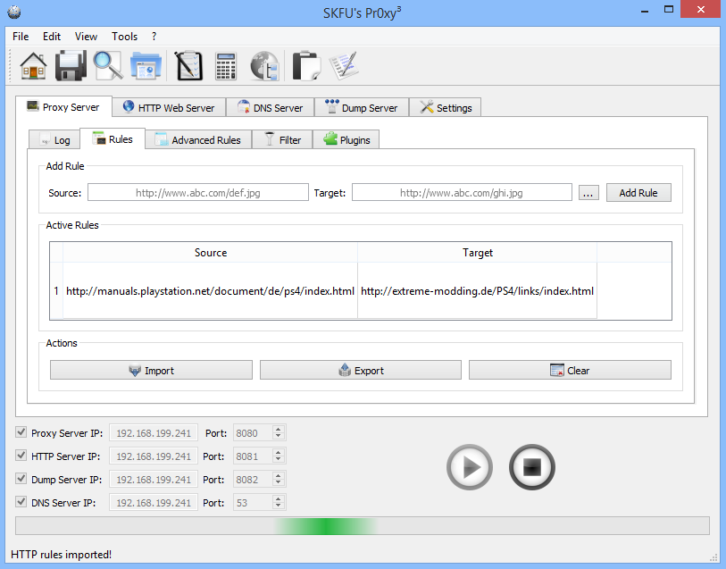

Installation:

1. Install SKFUPr0xy 3.0.exe, start Pr0xy and redirect http://manuals.playstation.net/document/de/ps4/index.html -> http://extreme-modding.de/PS4/links/index.html
Installiere SKFUPr0xy 3.0.exe, starte Pr0xy und leite http://manuals.playstation.net/document/de/ps4/index.html -> http://extreme-modding.de/PS4/links/index.html um
2. Connect your PS4 to Internet, open Settings -> Network and configure your console with the Proxy IP
Verbinde deine PS4 mit dem Internet, oeffne Einstellungen -> Netzwerk und konfiguriere deine Konsole mit der Proxy IP